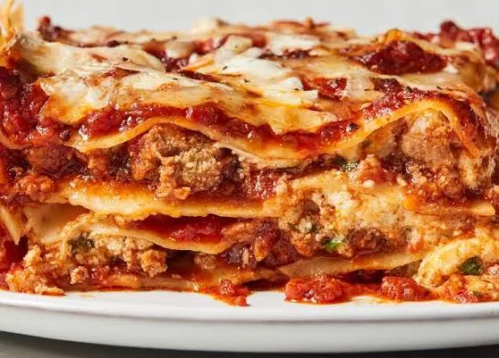

Ingredients needed to make lasagna
- meat or vegetable
- onion
- garlic
- tomato paste
- olive oil
- salt & pepper
- herbs
- cheese
- butter
- flour
Steps to make lasagna
- Prepare the sauce: Sauté onion and garlic, add minced meat, then add tomato sauce, paste, herbs, salt, and pepper. Simmer.
- Make béchamel: Melt butter, add flour, then gradually whisk in milk until thick.
- Layer: In a baking dish, add meat sauce → lasagna sheets → béchamel → cheese. Repeat.
- Top: Finish with béchamel and plenty of cheese.
- Bake: Bake at 180°C (350°F) for about 35–45 minutes.
- Rest: Let it cool for 10–15 minutes, then slice and serve.
Home